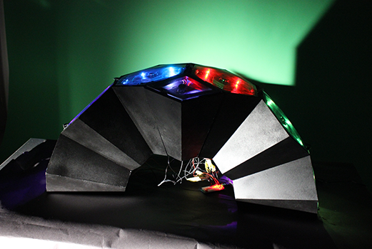

Le jeu va mesurer le rythme cardiaque du joueur via une extension Arduino reliée à Unity via Uduino. Les feedbacks de rythme et de jeu sont aussi bien sur l’écran de jeu que sur l’instrument grâce à un système de LED adressables. Le joueur affronte des vagues d’ennemies apparaissant procéduralement. Afin de créer de nombreux niveaux et nombreuses vagues, j’ai créé un outil utilisé par notre LevelDesigner. Celui-ci lui a permis de créer rapidement une trentaine de patterns différents.
J’ai été chargé de toute la programmation aussi bien sur Arduino que sur Unity. J’ai appris à gérer les frames rate de Unity afin que le jeu reste en rythme. J’ai appris le langage d’Arduino et ai adapté le package Uduino afin qu’il réponde à nos besoins. J’ai appris à créer un system de rythme régissant toutes les mécaniques du jeu. J’ai appris à travailler avec les designers qui on construit l’instrument afin que le jeu sur Unity et l’instrument en forme qu’un seul et même jeu.